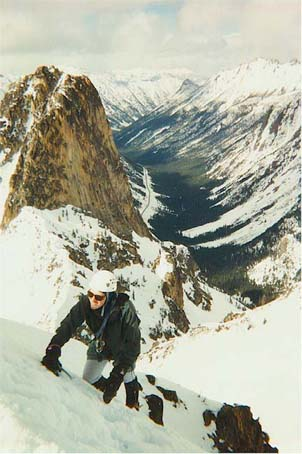
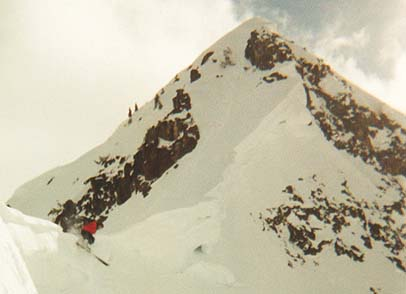
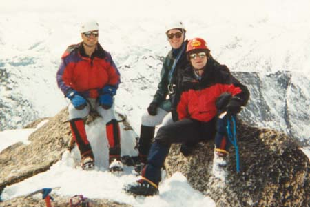
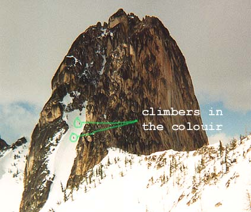
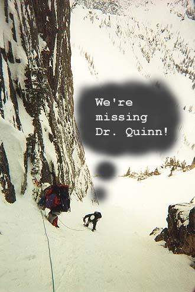
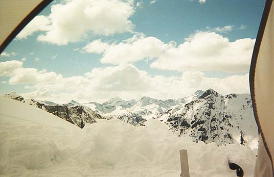
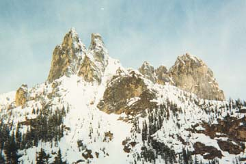

Washington Pass
- South Early Winter Spire and others
- May 8-9, 1999
As we roped up at the base of the colouir, the steep hard snow above was looking easier and easier. Eager for it, I started up first, with Steve then Jeff following on the rope. Almost immediately, I realized this was {\em the steepest snow I’d ever climbed}, and was sort of inventing techniques on the fly. As if that wasn’t enough of a challenge, Steve’s left crampon came off twice, and I chopped a stance out of the hard snow while Jeff helped him adjust it. Once I had a secure platform I felt bad, realizing I had rained chucks of ice on them while I built it. This didn’t stop me from doing it again the second time!







After watching Jeff jog up the steep slope, totally making light of my difficulties and pissing me off, I was ready to give up the lead. The angle lessened, and we entered a thin, steep walled gully, with rocks poking through the snow at intervals. Jeff set a fast pace, punctuated by occasional calls for rest stops from Steve or myself. Calf muscles burned from constant front-pointing in the hard snow. But the view, and the fantastic position in this wild place kept our spirits high, and our vocabulary small:
“This is awesome!”
“Man, this is great!”
“Holy cow, there is nothing so cool! … hang on, lemme rest!”
There were two rappel anchors, which we clipped as we went up. These provided some security while we were attached, but for fully half the route we depended on the ability of the other two members on the rope to stop a fall by one. Needless to say, we were very careful.
At the top of the colouir, Jeff turned left, and scrambled up a mixture of snow and rock, his crampons sticking well onto faces of knobby stone. Steve followed nicely, and I talked to Mr. X (*I don’t want to reveal his identity without permission, but I’ll bet some of you could figure it out) for a few minutes, who had just wandered up behind us. Jeff belayed me up, and there we stood, looking at the wildest patch of mountains in the United States. Jagged peaks rose and fell to the horizon in every direction. Dark clouds shortened the view west, but added to the mystery of the ranges. Mr. X pointed out his first ascent lines on Tower Peak and The Golden Horn to the north.
It was only around 1:00 PM, so we headed down for more adventure. Jeff wanted to ski in the basin where we camped. He gave a nice belay down to the top of the colouir, then continued quickly down to the first rappel anchor. I went down last, facing into the steep snow and making small talk with a crowd of climbers heading up. From the rappel anchor, we made a quick double rope rappel to the next anchor, where Jeff continued down unroped. Unfortunately, there was no rappel for the steepest part. Steve, sensing my apprehension, offered a belay from a picket pounded into the snow. I decided against it, rationalizing that I’ve got to learn to do this sometime. I went down first, quite cautiously, finding it hard to gage if I felt secure with my crampon and ax placements or not. Steve and I unroped at the base, and called it a good climb.
For giggles and bile, we traversed a corniced ridge above camp, and over to the high pass under Blue Lake Peak. We saw Jeff experience some great skiing, and an equally great wipe out…arms and legs flailing! He skied up to the pass, and we set off to climb Blue Lake Peak. It was short and very steep, but previous parties had kicked excellent steps up the wall of hard snow. Jeff got a few pictures, and we descended before rain clouds to the west could overtake us. We made a slow, steady descend, mindful of the long drops to a valley on each side!
The last event of the day was watching Jeff and another skier jump off cornices under the peak. Mr. Y, one of Mr. X’s brothers, was taking photographs, and his skier had to make several jumps before the shot was perfect.
Long Night
We piled into the tent early, around 6:30, for the warmth and chance to get off our feet. It was crowded, but we had a good time, making up all kinds of jokes. We considered ripping Steve’s down bag open just for the fun of throwing feathers around. I took a lot of ribbing because I had forgotten the stove fuel at home, necessitating a big carry of water from the car. Had we been cold and uncomfortable I would have suffered immense guilt! But, warm and tired, we dined on tuna fish, bagels, and some kind of dense, carrot-cake-like substance Jeff brought called “Pemmican.”
We were mildly worried about a party on the SW Arete, where a member was being lowered slowly over a period of hours. Finally, around 9 PM, they were safely down. I found out the next day that someone in the group had gotten scared due to the exposure, and was unable to continue, even to rappel down.
I didn’t think I slept too well, but Jeff complained loudly about my nocturnal nostrilations in the morning. It was a long night, but there were many events of the day to think about. We had all been captivated by the way snowflakes drifted up past us in the colouir. Visions of looking down the chute as these little white flakes floated by pleasantly congealed in my mind.
A Gray Dawn
Rising to a gray, cold, snowy morning, we settled on Jeff’s idea of climbing Copper Peak, 2 miles to the southeast, rather than the rock climb of the SW Arete. Steve and I plunge-stepped 1500 feet down from the high pass, descending past two small basins. The filtered morning light made it hard to tell the angle of slopes ahead. We kicked little snowballs ahead of us to see if they rolled downhill or stayed in place! Jeff skied by, finding the icy snow difficult to ski.
Just above the valley trees, we traversed across avalanche paths, mindful of conditions and planning our escape routes should danger increase in the heat of afternoon. Avalanches had roared down every snowy face in the isolated valley.
Our confidence that the cold of morning would last prompted us to cache snowshoes and wend a way up to the long west ridge of Copper Peak. After some hard work, we met Jeff on the ridge where it steepens. 200 feet of steep, exposed snow began abruptly at a short vertical patch, easily negotiated with the help of a hapless tree. Insulted by my familiarity, she covered me with snow. I followed Jeff who nervily portaged skis and poles up the hard 35 degree slope.
After a brief rest, Jeff re-attached skis leaving Steve and I to sink in 3 feet of powder. We learned to find wind-packed or steeper areas for easier walking, and soon we stood on the summit, looking back to Blue Lake Peak, into the Copper River valley, and across to forbidding north ledges on Stilleto Peak. Steve was concerned about getting down soon, and back up to the Blue Lake pass before the snow became dangerous to travel on. First though, we watched Jeff descend a steep colouir high on the ascent ridge. After a few sharp turns and narrow escapes, he was clear, and off to sunny wanderings in the valley. I cursed my uncertainty on steep snow as we descended, tense and facing into the snow on slopes which Steve had nimbly scampered turned sideways.
Once down from that steep portion, we merely had to slog across the valley and up to the high pass under Blue Lake Peak. Time to slow down and enjoy the country, because we were on our way home. At this stage I start trying to burn the scenery into my memory, and a melancholy feeling sets in as I plod towards civilization. We watched Jeff ski up the slopes on a long traverse, and Steve set off on his track. We spread out, each with our own thoughts, periodically checking on the others on this long white slope. When the wind died we slowed down in the suddenly oppressive heat. I found it easier to climb straight up rather than complete the long traverses Jeff laid out for us.
Finally, long after Jeff had disappeared over the pass, Steve and I reached it and climbed down the other side via bucket steps beside the great cornice. I glissaded down to camp, cold powder snow taking my breath away, and leaving my face half-frozen in the end! We found Jeff resting there, and after some good water we packed up and started down. Jeff lightened our loads since he expected to be at the car early via some fancy skiing. As it turned out, glissading, plunge-stepping and a fast pace through the forest brought us up close behind.
A nice drive back on highway 20, some Mexican food, and safely home again to loving arms! We all had a tremendous time, and set a new benchmark for fun.